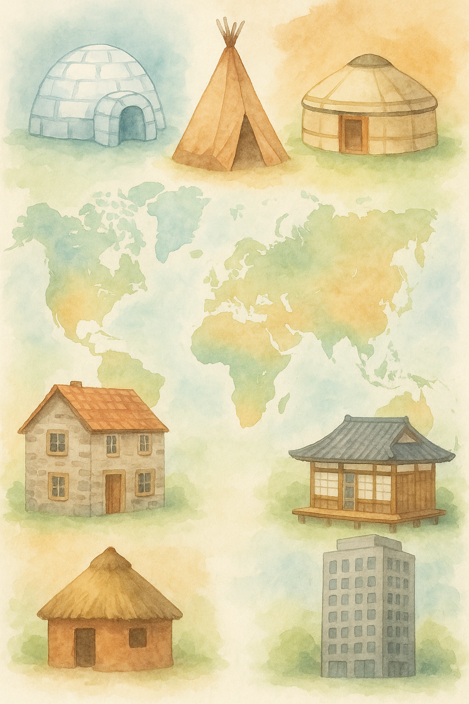
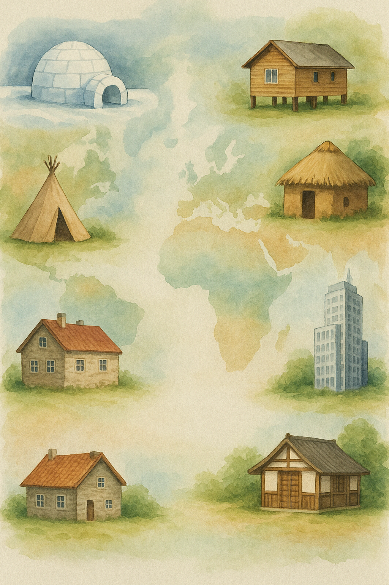
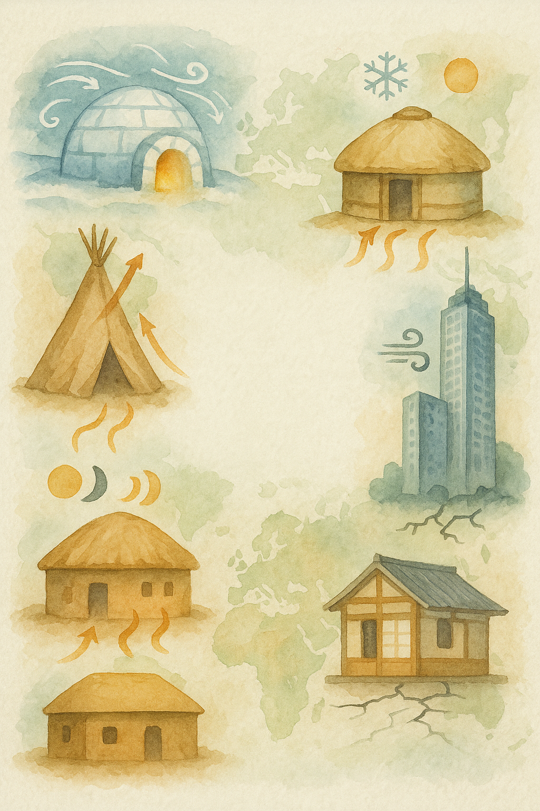

Dieses interaktive Arbeitsblatt demonstriert eine einfache Möglichkeit,
Lernenden automatisch differenzierte Aufgaben bereitzustellen. Nach dem
Öffnen geben die Schülerinnen und Schüler ihren Vornnamen in
das Feld ein.
In diesem Beispiel erfolgt die Auswahl des Schwierigkeitsgrads der Aufgaben durch die Eingabe der Buchstaben A,B oder C in das Namensfeld:
A → Aufgabenpaket A (Grundniveau, inklusionsgerecht)
B → Aufgabenpaket B (Aufbauniveau, G‑Kurs)
C → Aufgabenpaket C (Erweiterungsniveau, E‑Kurs)
Die übrigen Pakete bleiben ausgeblendet. Ein Klick auf
„Als PDF exportieren" erzeugt anschließend eine
druckfertige PDF mit genau dem aktuell sichtbaren Paket. So lassen sich
personalisierte Ausdrucke schnell generieren. Nach dem Speichern
laden die Schülerinnen und Schüler ihre PDF‑Datei in IServ oder Taskcards
hoch, sodass Sie für jede Lernende und jeden Lernenden eine saubere
digitale Version zur Korrektur haben.
Klicke auf „Arbeitsblatt anzeigen", um die Schüleransicht zu testen.
Einführung – So arbeitest du mit diesem Blatt:
In den folgenden Aufgaben geht es darum, aus Sachtexten gezielt Informationen
herauszufiltern. Gib zunächst deinen Vornamen in das Feld oben ein.
Wohnformen rund um die Welt
So wohnen Menschen in verschiedenen Ländern

Häuser aus verschiedenen Kulturen zeigen die Vielfalt des Wohnens
Menschen wohnen überall auf der Welt. Ganz im Norden, in Grönland, leben
die Inuit. Früher bauten sie Iglus aus Schneeblöcken. Die Indianer in
Nordamerika schliefen in Tipis aus Tierhäuten. In der Mongolei wohnen
Nomaden in runden Zelten, den Jurten. In Europa leben die meisten Menschen
in Steinhäusern. In Afrika werden viele Häuser aus Lehm gebaut. In Japan
haben Holzhäuser Wände aus Papier. Heute findet man auf der ganzen Welt
auch Hochhäuser aus Beton.
Lies den Text aufmerksam und unterstreiche die Ländernamen.
Trage die Informationen in die Felder der Tabelle unten ein.
Land / Region
Bewohner / -gruppe
Typische Behausung
Bauen und Wohnen im Einklang mit der Natur
Wie Klima und Materialien unsere Häuser prägen

Traditionelle Bauweisen passen sich an ihre Umgebung an
Die Art, wie Menschen ihre Häuser bauen, hängt stark von Klima und
verfügbaren Materialien ab. Auf Grönland errichteten die Inuit einst Iglus
aus fest zusammengepresstem Schnee – hervorragende Isolatoren bei trockner
Kälte. Heute leben viele Inuit in Holzhäusern, die per Frachtschiff
geliefert werden. Über die weiten Grasländer Zentralasiens ziehen seit
Jahrhunderten Nomaden. Ihre runde Filzjurte lässt sich in wenigen Stunden
ab‑ und wieder aufbauen. Prairieindianer Nordamerikas nutzten Tipis aus
Büffelhäuten, um den Herden folgen zu können. In tropischen Regionen
Afrikas formen Lehmziegel aus getrocknetem Schlamm kühle Wände, solange
sie nicht durchnässt sind. Europäische Städte entwickelten massive Stein- und
Ziegelbauten, während in ostasiatischen Ländern wie Japan Holzhäuser mit
leichten Papierwänden entstehen, die bei Erdbeben nachgeben. Moderne
Baustoffe wie Stahl und Beton ermöglichen heute Wolkenkratzer nahezu in
jedem Klima.
Markiere alle Wörter, die ein Baumaterial bezeichnen.
Übertrage die wichtigsten Informationen in die Tabelle.
Region / Klima
Traditionelle Bauweise
Verwendete Materialien
Besondere Eigenschaften
Architektur als Antwort auf Umweltbedingungen
Traditionelle Bauweisen und ihre physikalischen Prinzipien

Architektur als intelligente Anpassung an lokale Bedingungen
Architektonische Lösungen reflektieren stets das komplexe Zusammenspiel
zwischen klimatischen Bedingungen, verfügbaren Ressourcen und kulturellen
Traditionen. In der Arktis entwickelten die Inuit mit dem Iglu eine
geniale Konstruktion: Die Kuppelform minimiert die Angriffsfläche für
Stürme, während die Schneewände durch ihre isolierenden Lufteinschlüsse
Innentemperaturen von 0°C ermöglichen – bei Außentemperaturen von -45°C.
Die mongolische Jurte verkörpert dagegen Mobilität: Ihr Holzgerüst kann
binnen zwei Stunden demontiert werden, während die mehrlagige Filzabdeckung
sowohl gegen Sommerhitze als auch Winterkälte schützt. Nordamerikanische
Prärieindianer perfektionierten mit dem kegelförmigen Tipi eine windstabile,
transportable Behausung mit raffinierter Belüftung durch verstellbare
Rauchklappen. In Subsahara-Afrika nutzen traditionelle Baumeister die
thermische Masse von Lehmziegeln: Tagsüber absorbieren die dicken Wände
Hitze, nachts geben sie Wärme ab – eine passive Klimatisierung. Japanische
Architekten entwickelten flexible Raumkonzepte mit verschiebbaren
Papierwänden (Shoji), die Erdbebenschäden minimieren. Die industrielle
Revolution brachte Stahl und Stahlbeton, was Wolkenkratzer ermöglichte –
doch moderne Architektur besinnt sich zunehmend auf nachhaltige,
ortsangepasste Bauweisen.
Analysiere die klimatischen Herausforderungen und die entsprechenden baulichen Lösungen für jede Region.
Erstelle eine strukturierte Übersicht in der Tabelle.
Erkläre in einem kurzen Text (5-7 Sätze), warum moderne Architektur sich wieder traditionellen Bauweisen zuwendet.